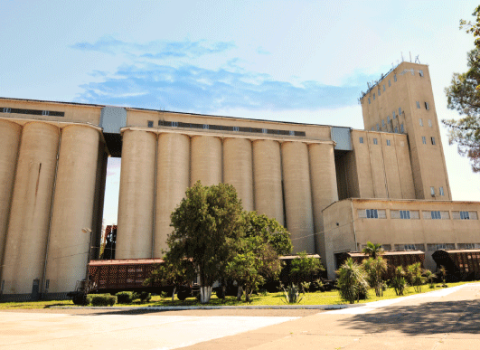

TERMINAL
Poti Grain Terminal Llc is located in Poti, Georgia, along the berth #15 of the Poti Sea port. The main target of PGT
is to service grain in-flow from and to Black Sea region;
Poti Grain Terminal Llc is located in Poti, Georgia, along the berth #15 of the Poti Sea port. The main target of PGT is to service grain in-flow from and to Black Sea region; PGT is the first alike terminal in Caucasus region with possibility to load and unload grains from vessel by means of pneumatic machines and grain transporting gallery directly from/to grain silos. Until now, there was only a possibility to unload vessels through direct method (cranes).
Today Georgia is represented as an Asia-Europe transport corridor for different commodities. Our goal is to add grain as a transit commodity.
store up to 24,000 metric tons of grains.
Location:
Birth No. 15, Poti Sea Port;
Storage Capacity:
24,000 mt;
TYPE:
Concrete Silos, 2 Sections;
Grain Types:
Wheat, Corn on task duration
and relationships.
Silo technical capacity:
360 mt/hour;
Rw/car intake unit:
2 intake pits;
Rw/car discharge capacity:
400 mt/hour;
Rw/car load capacity:
300 mt/hour;
Truck load capacity:
300 mt/hour;